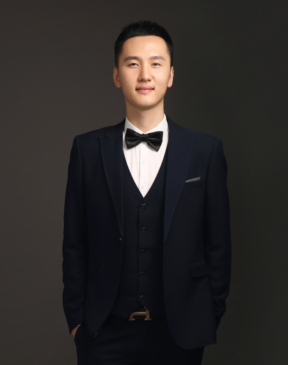

|  | 张广辉“齐鲁青年学者”特聘教授，博士生导师 山东大学，计算机科学与技术学院 中国，青岛 Email: ghzhang [AT] link.cuhk.edu.hk |
招生意向:
[2022年8月] 招收博士后、博士、硕士研究生。课题组为科研表现优异的学生提供多种形式的国内/海外学术交流访问机会，有意报考同学请通过电子邮箱发送简历。
多媒体传输系统，计算机网络，机器学习
2016年8月 － 2020年8月：香港中文大学，信息工程学，博士
2013年9月 － 2016年7月：北京大学，电子科学与技术，硕士
2009年9月 － 2013年7月：山东师范大学，电子信息工程，本科
2022年08月 － 至今： 教授，山东大学，计算机科学与技术学院
2021年11月 － 2022年06月： 研究助理教授，香港浸会大学，计算机科学系
2021年08月 － 2021年11月： 博士后，香港中文大学，计算机科学与工程系
2020年09月 － 2021年08月： 博士后，香港理工大学，可靠与安全性研究中心
Guanghui Zhang, Jie Zhang*, Haibo Hu, Yan Liu, and Jack Y. B. Lee, "Adaptive Video Streaming with Automatic Quality-of-Experience Optimization", IEEE Transactions on Mobile Computing (IEEE TMC), Mar. 2022. [CCF A, JCR Q1]
Guanghui Zhang, Jie Zhang*, Ke Liu, Jing Guo, Haibo Hu, Jack Y. B. Lee, and Vaneet Aggarwal, "DUASVS: A Mobile Data Saving Strategy in Short-form Video Streaming", IEEE Transactions on Service Computing (IEEE TSC), Feb. 2022. [CCF B, JCR Q1]
Jie Zhang, and Guanghui Zhang*, "A Parametric Unconstrained Beamformer Based Binaural Noise Reduction for Wireless Hearing Aids", IEEE/ACM Transactions on Audio, Speech and Language Processing (IEEE/ACM TASLP), Dec. 2021. [CCF B, JCR Q1]
Jing Guo, and Guanghui Zhang*, "A Video-Quality Driven Strategy in Short Video Streaming," 24th ACM International Conference on Modeling, Analysis and Simulation of Wireless and Mobile Systems (ACM MSWiM'21), Nov. 2021. [CCF C]
Guanghui Zhang, Ke Liu, Haibo Hu*, and Jing Guo, "Short Video Streaming with Data Wastage Awareness", IEEE International Conference on Multimedia and Expo (IEEE ICME 2021), July 2021. [CCF B]
Guanghui Zhang, Jack Y. B. Lee, Ke Liu*, Haibo Hu, and Vaneet Aggarwal, "A Unified Framework for Flexible Playback Latency Control in Live Video Streaming", IEEE Transactions on Parallel and Distributed Systems (IEEE TPDS), May 2021. [CCF A, JCR Q2]
Guanghui Zhang, Ke Liu*, Haibo Hu, Vaneet Aggarwal, and Jack Y. B. Lee, "Post-Streaming Wastage Analysis – A Data Wastage Aware Framework in Mobile Video Streaming", IEEE Transactions on Mobile Computing (IEEE TMC), Mar. 2021. [CCF A, JCR Q1]
Guanghui Zhang, and Jack Y. B. Lee*, "Ensemble Adaptive Streaming – A New Paradigm to Generate Streaming Algorithms via Specializations", IEEE Transactions on Mobile Computing (IEEE TMC), Apr. 2019. [CCF A, JCR Q1]
Guanghui Zhang, and Jack Y. B. Lee*, "LAPAS: Latency-Aware Playback-Adaptive Streaming," IEEE Wireless Communications and Networking Conference (WCNC) (IEEE WCNC 2019), Apr. 2019. [CCF C]
Guanghui Zhang, and Jack Y. B. Lee*, "On Data Wastage in Mobile Video Streaming",
IEEE Wireless Communications and Networking Conference (WCNC) (IEEE WCNC 2018), Apr. 2018. [CCF C]
讲师，香港浸会大学，COMP3065，人工智能应用开发，2022年春季
教学助理，香港中文大学，IERG3310，计算机网络，2017－2019年秋季
教学助理，香港中文大学，IERG1110，C语言程序设计，2017－2019年春季
教学助理，香港中文大学，IERG3830，软件开发设计，2018－2019年秋季